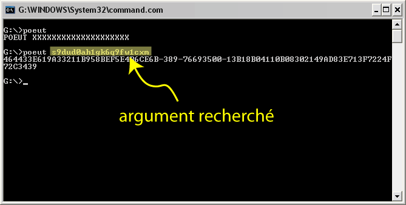
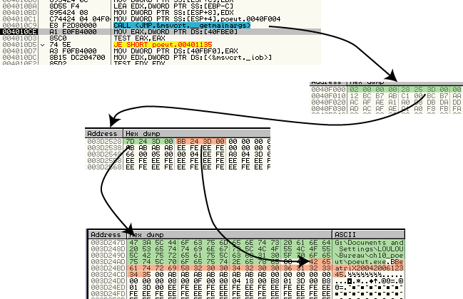

Date de publication : vendredi 26 mai 2006
Auteur : BeatriX
1.Introduction
Pour cette nouvelle édition de Securitech 2006, l'épreuve de reversing est à classer dans ce que Pulsar a joliment nommé la catégorie des "JunkRemoval".
En effet, ce binaire utilise une technique de protection qui consiste à OBFUSQUER lourdement l'algorithme de génération du serial en ajoutant du junkcode dans la routine. Il ne s'agit ni plus ni moins que d'ajouter des lignes de code inutiles pour rendre le code d'origine difficile à lire.
L'objet de cet article est de vous présenter une technique d'attaque pour venir à bout "facilement" de ce genre de protection.
Le JunkCode aussi appelé Code d'obfuscation est une technique de protection assez ancienne provenant de l'univers des virus qui permet de rendre l'analyse statique difficile. Le junkcode est souvent généré à l'aide de techniques que l'on détourne de leur usage premier, tout est dans l'intention ! Je vois actuellement 5 techniques distinctes que l'on peut qualifier d'obfuscations (si elles sont utilisées comme tel) :
- Le Garbage code (instructions "poubelles" supplémentaires inutiles visant à dérouter l'analyste)
- Le CCA ou Code Changeant d'Apparence(instructions supplémentaires visant à dérouter les désassembleurs)
- Les layers (couches de code cryptées visant à empêcher l'analyse statique et le tracing)
- Le polymorphisme (consiste à remplacer une instruction par un code équivalent - une instruction revêt alors plusieurs "formes")
- Le pseudo-code (utilisation d'une VM pour rendre l'analyse plus difficile)
Nous sommes ici en présence de 3 types d'obfuscations : Le garbage code, le CCA et le polymorphisme.
1.1. Travail préparatoire (lancement du binaire).
Poeut.exe fonctionne en mode console et nécessite la saisie d'un argument de 20 caractères (passé en ligne de commande) pour produire un SERIAL. Le challenge 10 de Securitch 2006 consiste à retrouver l'argument permettant d'obtenir le SERIAL suivant :
464433E619A33211B958BEF5E4B6CE6B-389-76693500 -13B18B04110B08302149AD83E713F7224F72C3439
L'argument qu'il fallait trouver est s9dud0ah1gk6q9fw1cxm comme le montre l'illustration suivante :

Si nous lançons le binaire en prenant soin de logguer les appels aux APIs, nous obtenons ceci :
; ***************************************************** ; ; APIs log - poeut.exe (1) ; ; ***************************************************** =========> __set_app_type =========> SetUnhandledExceptionFilter : 00401180 =========> __getmainargs =========> __p__fmode =========> __p__environ =========> FindAtomA =========> malloc =========> AddAtom =========> GetAtomNameA =========> atexit =========> printf (stdout) : %s XXXXXXXXXXXXXXXXXXXX
Nous constatons qu'il attend propablement comme argument une chaine de 20 caractères. (comptez le nombre de X !). Si nous relançons le binaire en lui transmettant comme argument "abcdefghijklmnopqrst", nous obtenons ceci :
; ***************************************************** ; ; APIs log - poeut.exe (2) ; ; ***************************************************** =========> __set_app_type =========> SetUnhandledExceptionFilter : 00401180 =========> __getmainargs =========> __p__fmode =========> __p__environ =========> FindAtomA =========> malloc =========> AddAtom =========> GetAtomNameA =========> atexit =========> strlen =========> memset =========> puts : 6AA8DE45918023095F6E831EFE48D00B-394-94109400 -05314B04313B03312B794AA7513C2CA6CCF72C
Nous constatons que le programme change de comportement après l'appel à la fonction atexit de msvcrt.dll. Il est donc temps de jeter un oeil au code à l'aide d'un simple debuggueur.
1.2. Analyse du binaire.
A l'aide d'un debuggueur, nous pouvons localiser le début de la routine qui se charge de calculer le SERIAL à partir de l'argument.
Ce binaire récupère l'argument grâce à la fonction _getmainargs qui renvoie deux valeurs en 40F000h et 40F004h.

Le premier dword (situé en 40F000h) indique la taille du tableau pointé par le second dword (situé en 40F004h). En termes clairs, le tableau situé en 3D2528h est composé de 2 dwords. Ces deux valeurs sont à leur tour des pointeurs vers deux chaines de caractères : la première chaine est le chemin d'accès au binaire et la seconde est l'argument passé en ligne de commande.
Pour savoir si un argument a été passé en ligne de commande, le binaire teste le dword situé en 40F000h (il vérifie que la valeur est au moins 2) :
403E4B cmp dword ptr [ebp+8], 1 403E5E jle Exit_Program
La routine qui va se charger de calculer le serial commence donc juste après cette comparaison, soit en 403E64h...et les ennuis commencent à ce moment là. Nous constatons en effet très vite que la routine est obfusquée de 2 façons :
- Des lignes de code inutile ont été ajoutées entre les lignes d'origine.
- Les lignes ont été regroupées par blocs et ces blocs ont subi des permutations à l'aide de sauts inconditionnels.
voici un aperçu du code obfusqué en statique (on peut y voir les sauts très nombreux sous forme de CALL, de JMP ou de RET) :

Copyright (C)- FRET (2006)